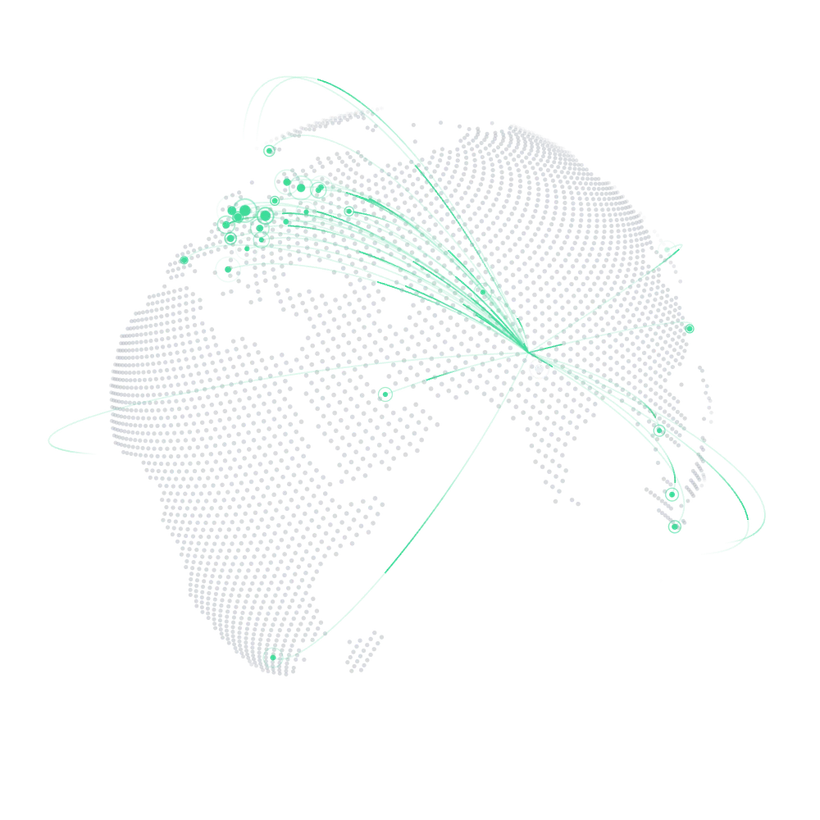
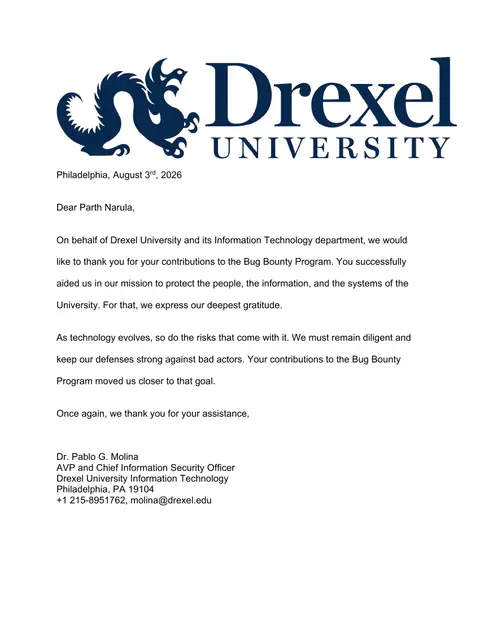
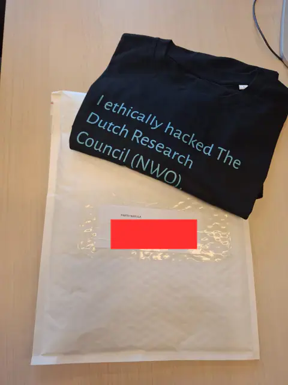
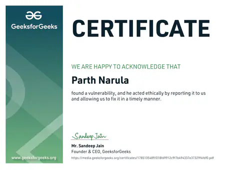
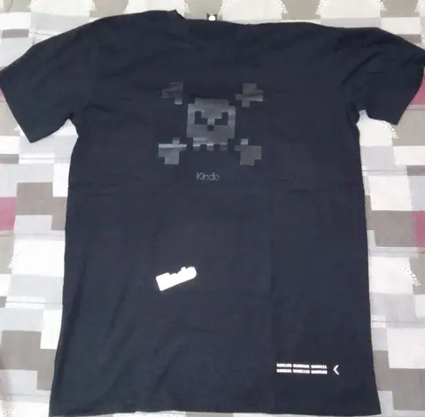
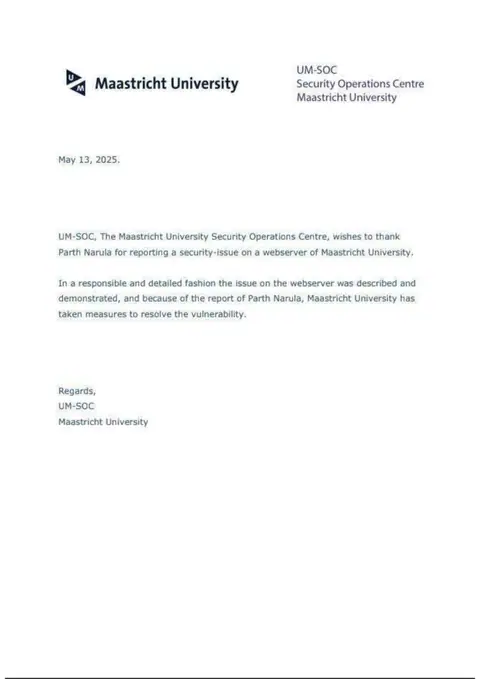
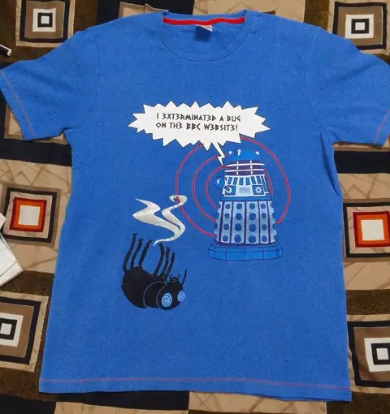
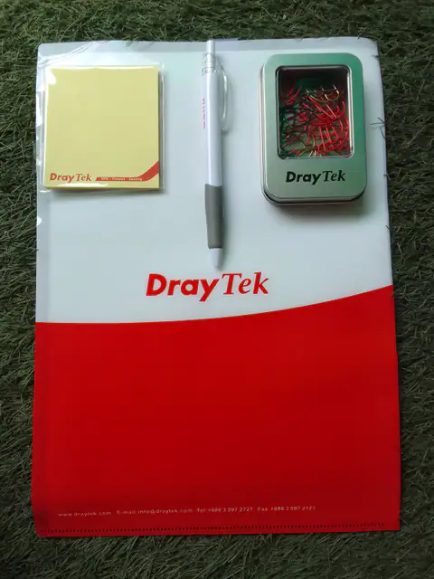

Open to security roles and pentest work
Parth Narula Security researcher and penetration tester
I find the access control, logic and API bugs that scanners miss. 450+ organizations have fixed what I reported, and on 45 Halls of Fame mine is the very first name.
01Record
The numbers, with receipts
Each number links to where you can check it yourself.
Why 355 and not 450+?
Not every thank you is mine to publish. The difference is real, reported and fixed work that I can't put my name next to in public yet.
219 of the listed organizations link to a public page or a screenshot right here. Ask me about any of the others.
Check the full list- Sub companies and clients of a listed group, credited under the parent's name
- Private programs and pentest engagements under NDA
- Programs that haven't approved public disclosure yet
- Reports already confirmed, waiting for the Hall of Fame to update
02Scope
What I test
Five surfaces, one question every time: where does this system trust something it shouldn't?
Broken access control, business logic and authentication. The bugs that need someone to understand how the app is supposed to work first.
- IDOR and privilege escalation
- Business logic and race conditions
- OTP, password reset and session flaws
- XSS chains to account takeover
- Price and checkout manipulation
- SSRF and open redirects
REST and GraphQL, tested request by request. Most of the serious bugs I find live in endpoints the interface never calls the way an attacker would.
- BOLA and broken function level authorization
- Mass assignment
- Excessive data exposure
- Rate limits and enumeration
- GraphQL introspection and batching
- Verbose errors and stack traces
The app and the API behind it. I take the APK apart, then watch every request it makes once pinning is out of the way.
- Exported activities, services and deep links
- Insecure local storage
- Hardcoded keys and secrets
- WebView and intent issues
- Certificate pinning bypass
- Backend APIs the app hides
Where it shows up
Bug bounty programs, CTFs and client pentests. Client reports stay with the client, and public writeups are on the way.
Chatbots, copilots and agents. Same mindset, newer ground: the model is just another component that trusts input it shouldn't.
- Direct and indirect prompt injection
- System prompt leaks
- Data exfiltration through tools
- Insecure output handling
- Jailbreaks and guardrail bypass
- Cross user data leaks
Cloud and infrastructure, found the way an attacker finds them: recon at scale, then the one panel or bucket that should never have been public.
- Recon with dorks and ZoomEye
- Exposed admin and remote access panels
- Open storage buckets
- Leaked keys in JS and repos
- SSRF to metadata services
- Subdomain takeover
Certified eWPTX v3CEH v13eJPT v2APIsec ACP Details
03Case files
Reported, fixed, written up
Six findings that are fixed and public. Targets stay redacted unless the program allows naming them.
04First in
45 walls where my name came first
Some programs had never thanked anyone before my report. On these Halls of Fame, I'm entry number one. Select any card to open its public page.
- BankAxept (Payment System)Hall of Fame01Parth Narula02
03Open the public page - CommerzbankHall of Fame01Parth Narula02
03Open the public page - University of St AndrewsHall of Fame01Parth Narula02
03In the directory - AVM99963Hall of Fame01Parth Narula02
03Open the public page - BringmeHall of Fame01Parth Narula02
03Open the public page - Daniel FisherHall of Fame01Parth Narula02
03Open the public page - ElfsterHall of Fame01Parth Narula02
03Open the public page - Government of Western AustraliaHall of Fame01Parth Narula02
03Open the public page - Julie & JoyHall of Fame01Parth Narula02
03Open the public page - LennyBaconHall of Fame01Parth Narula02
03Open the public page - MBO DigitaalHall of Fame01Parth Narula02
03Open the public page - Personal Property Securities RegisterHall of Fame01Parth Narula02
03Open the public page - Red GamesHall of Fame01Parth Narula02
03Open the public page - WhatfixHall of Fame01Parth Narula02
03Open the public page - ZeptoHall of Fame01Parth Narula02
03Open the public page - AttensiHall of Fame01Parth Narula02
03See the screenshot - BelWü (Academic Network)Hall of Fame01Parth Narula02
03See the screenshot - CTW IncHall of Fame01Parth Narula02
03See the screenshot - Hulpverleningszone MeetjeslandHall of Fame01Parth Narula02
03See the screenshot - SeantisHall of Fame01Parth Narula02
03See the screenshot - SuttyHall of Fame01Parth Narula02
03See the screenshot - VideoDockHall of Fame01Parth Narula02
03See the screenshot - ZenDiS (Digital Sovereignty)Hall of Fame01Parth Narula02
03In the directory
- City of BerlinHall of Fame01Parth Narula02
03Open the public page - Port of TallinnHall of Fame01Parth Narula02
03Open the public page - Australian Financial Security AuthorityHall of Fame01Parth Narula02
03Open the public page - BokadirektHall of Fame01Parth Narula02
03Open the public page - CSCherrHall of Fame01Parth Narula02
03Open the public page - Dept. of Industry, Science & ResourcesHall of Fame01Parth Narula02
03Open the public page - Gi EffektivtHall of Fame01Parth Narula02
03Open the public page - Inspector-General of TaxationHall of Fame01Parth Narula02
03Open the public page - KIVI (Royal Engineers Society)Hall of Fame01Parth Narula02
03Open the public page - Matchis (Stem Cell Foundation)Hall of Fame01Parth Narula02
03Open the public page - Modalku / Funding SocietiesHall of Fame01Parth Narula02
03Open the public page - Praamid EstoniaHall of Fame01Parth Narula02
03Open the public page - TicketCounterHall of Fame01Parth Narula02
03Open the public page - WhatIsMyBrowserHall of Fame01Parth Narula02
03Open the public page - AccodeingHall of Fame01Parth Narula02
03See the screenshot - Bacardi55Hall of Fame01Parth Narula02
03In the directory - Coloop AIHall of Fame01Parth Narula02
03See the screenshot - Felix BrezoHall of Fame01Parth Narula02
03In the directory - MetacodeHall of Fame01Parth Narula02
03In the directory - SIF/ERDA (Univ. of Copenhagen)Hall of Fame01Parth Narula02
03In the directory - THWS Würzburg-SchweinfurtHall of Fame01Parth Narula02
03See the screenshot - XledgerHall of Fame01Parth Narula02
03In the directory

34 countries, every report sent from India. Drag to turn it.
05Where the reports went
From WHO to the city hall
Global enterprises, governments, universities, banks and the startups in between.
- NLNetherlands65
- USUnited States51
- DEGermany46
- AUAustralia27
- GBUnited Kingdom19
- INIndia17
- SESweden14
Some of the organizations that recognized my work
- Apple
- World Health Organization
- UNESCO
- European Union
- Boeing
- Nokia
- BASF
- Thales
- Philips
- Red Hat
- TP-Link
- Michelin
- MediaTek
- BBC
- Pirelli
- Lloyd's of London
- Commerzbank
- Deutsche Börse
- Proton
- Wiz
- Swedish Police Authority
- City of Berlin
- Australian Department of Home Affairs
- Drexel University
- Cambridge University Press
- TU Delft
06Proof
What showed up at my door
Letters on university letterhead, certificates, and swag from 29 programs. Pick them up and move them around.

Drexel University, CISO
NWO
GeeksforGeeks Pirelli
Kinde
Maastricht University
BBC
DrayTek172 Hall of Fame screenshots 11 letters and certificates 22 swag photos
Open the archive07Background
Where the experience comes from
Experience
-
Security Researcher
Nov 2023 to nowIndependent, through disclosure and bug bounty programs
- Reported vulnerabilities to 450+ organizations, from Apple, WHO and the European Union to Nokia, Boeing and the BBC.
- Credited on 250+ Halls of Fame, including Nokia and CERT-EU, and the first researcher on 45 of them. Thanked in writing by Drexel University's CISO and GeeksforGeeks, with letters from TP-Link and Thales on the way.
- 4+ CVEs, starting with CVE-2025-56697.
-
Unihackers
Mentor, Bug Bounty and Web Security
Jun 2025 to now- Mentor students and new hunters, turning my own reports into practical lessons.
- Write guides on API security, request manipulation, target selection and prompt injection.
-
ScriptJacker LLP
Founder and Lead Pentester
2023 to now- Manual security assessments across web, API, Android and network for 150+ clients, with 2,500+ bugs reported and resolved.
-
Penetration Tester Intern
Aug to Sep 2023Forensic Academy
- Burp Suite, Wireshark, Cisco Packet Tracer and malware analysis tools. Built and tested an enterprise network and a live web application, graded A+.
Competitions
- AIR 21HackWithIndia 2026 Web Hacking Competition, 21st of 10,000. Leaderboard
- 1stRoot Breach CTF, UTKANSH '26 at NIT Jalandhar, March 2026. Certificate
- 1stEncrypted CTF on ThunderCipher, November 2025. Certificate
- 1stTrivarna 2.0, international CTF by Astitwam. Event certificate
- 1stCyber War 2026 CTF at LPU, sponsored by Quick Heal and CompTIA. Photo
- 1stRCS CTF 2026
- 1stCyberthon
- 2ndXploit404 CTF at LPU, April 2026. Certificate
CTFs as team lead of ScriptJackers.
Certifications
- eWPTX v3Web Application Penetration Tester eXtreme, INE SecurityDec 2025
- CEH v13Certified Ethical Hacker, EC-Council. No. ECC7154890236. CertificateNov 2025
- eJPT v2Junior Penetration Tester, INE Security. ID 171442005. CertificateJan 2026
- ACPAPIsec Certified Practitioner, APIsec University. Verify on CredlyMar 2026
- EHEEthical Hacking Essentials, EC-CouncilFeb 2022
Education
Toolbox
Burp SuitePostmanKali LinuxWiresharkGraphQLREST APIsPythonBashJavaScriptPHPSQLRubyC
My recon tool on GitHub, 21+ modules08Replies
What came back after the report
The reports were accurate, and the discussions were constructive and fair. We're completely satisfied with the service and happy to have our security improved.
Communication was quick and thorough, with all information needed to triage and fix bugs. A great experience.
Parth proactively identified security concerns and provided a thorough, well documented report.
They came back shortly with detailed reports. Our platform and users are safer, thanks to ScriptJacker!
09Writing
Writeups with the requests left in
Real findings, explained step by step, published after the fix.
Medium
- Recon to shell access: Nokia Hall of FameRecon, infrastructure
- Double door IDOR exposing 85k+ emailsIDOR, PII
- Breaking the checkout: price manipulationBusiness logic
- From profile update to account takeoverAPI, mass assignment
- IDOR privilege escalation: deleting protected accountsAccess control
- One cookie to steal them allIDOR, account takeover
- How IDOR and a business logic flaw exposed PIIIDOR, logic
- Hijacking reviews: IDOR is everywhereAccess control
- Horizontal privilege escalation via IDORAccess control
- 5 ways I found PII disclosures in the wildRecon, PII
ScriptJacker blog
- Turning a self XSS into stored XSS and mass account takeoverJul 2025
- The art of request manipulationNov 2024
- A rare broken authentication flaw most people never check forAug 2024
- Bypassing hyperlink injection protection with a double periodJun 2024
- Sensitive data exposureNov 2023
- Vulnerable and outdated componentsJul 2023
10Contact
Let's find it before someone else does.
Hiring for a security role, planning a pentest or running a bug bounty program? Email me or book a 30 minute call.